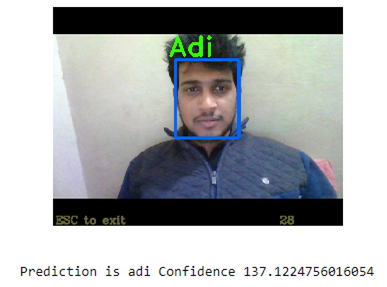
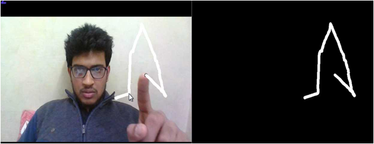

Python || OpenCV || Machine Learning
This project was my first Btech Project submitted under Dr. Jyotsna Singh
 The project is a 2 tier security system wherein one checks the authenticity of an individual by detecting the face and recognising him/her.
If the person's name is found in the database we agree that the person is an authentic user and second level of security is performed wherein he will be asked to draw the pattern, if the pattern matches with the inbuilt set pattern, we say the user is authenticity